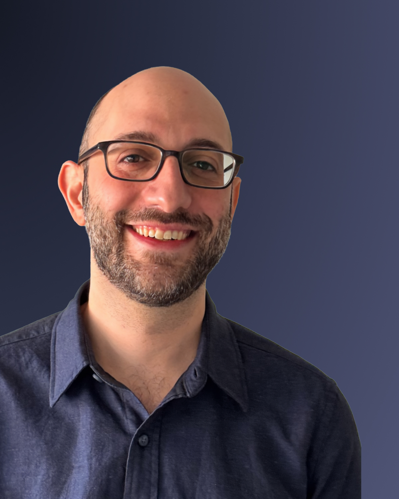

Marketing Content for Nonprofits
Joey interviews your alumni, partners and supporters to create weekly marketing content aligned with your strategy and centered on your people.
Message me on LinkedInJoey interviews your alumni, partners and supporters to create weekly marketing content aligned with your strategy and centered on your people.
Message me on LinkedIn
June 16, 2025
"When Joey first approached us about working together, I'll be honest—I was skeptical. We're a staff of 18 with limited bandwidth, and I've had experiences with consultants who promise the world but don't understand our reality.
Joey was different from day one. He actually slowed down to match our pace. For three months, he was like this patient strategist in our corner—researching our work, sending thoughtful insights, and building real relationships with our team.
The breakthrough came when Joey interviewed our program alumni. Watching him create that space for authentic storytelling—and seeing how it reconnected me with why I do this work—that's when I knew we had something special.
Kate Reuther Executive Director, Uptown StoriesHave you ever seen your organization's ecosystem arrange on a whiteboard? It's a powerful experience to see the big picture from and outsider's perspective. We'll meet to validate my research and discuss your challenges and opportunites.
My job is to bring new leads into your Who are we trying to reach and how do we get their attention?
We captured stories from Uptown Stories oldest program alum about how the programs impacted the person she is today. The footage became the raw material for a spring fundraising campaign promoted across email, social, and GiveButter.
We turned the interview footage into an an email campaign centered around a 5-part 60 second video series about Siena's experience with Uptown Stories.
We turned the interview footage into an an email campaign centered around a 5-part 60 second video series about Siena's experience with Uptown Stories.
We captured stories from Uptown Stories oldest program alum about how the programs impacted the person she is today. The footage became the raw material for a spring fundraising campaign promoted across email, social, and GiveButter.
Grow on Social
We turned the interview footage into an an email campaign centered around a 5-part 60 second video series about Siena's experience with Uptown Stories.